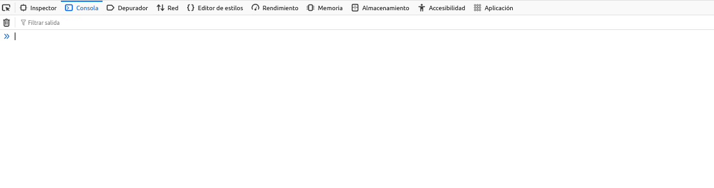
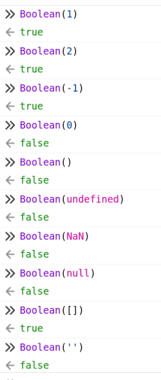

Prerrequisitos de Javascript#
El objetivo de este libro es enseñar a programar para el cliente web. Se presupone que ya se conocen los rudimentos básicos de la programación y los algoritmos. Puesto que el libro está situado en el módulo de DWEC de segundo de DAW, no es necesario enseñar conceptos como Programación orientada a objetos, HTML, JSON, HTTP… No obstante, javascript como lenguaje tiene sus particularidades y son las que vamos a destacar en estos primeros capítulos.
Integrar JS en HTML#
En primer lugar, veamos cómo integrar Javascript en el HTML para que se ejecute en el navegador:
<!-- Integración de JavaScript directamente en el HTML -->
<script type="text/javascript">
// Este es un bloque de código JavaScript embebido directamente en el documento HTML.
// Aquí puedes escribir cualquier código JavaScript que necesites.
console.log("Hola, este es un mensaje desde JavaScript embebido.");
</script>
<!-- Integración de un archivo JavaScript externo -->
<script type="text/javascript" src="scripts.js"></script>
<!-- Mensaje para navegadores que no soportan JavaScript -->
<noscript>
<p>Tu navegador no soporta JavaScript o está desactivado.</p>
</noscript>
<!-- Comentario: Muchas veces, los desarrolladores colocan los scripts al final del documento
para asegurarse de que todo el contenido HTML se haya cargado antes de ejecutar el JavaScript. -->
Comprobar que funciona#
Los navegadores modernos vienen con una consola de depuración muy avanzada que permite interactuar con el DOM, el CSS, el JS, la red, entre otras cosas. La abriremos con F12 o el botón derecho y la mantendremos abierta casi todo el tiempo.

Podemos ejecutar algo como:
console.log("hola mundo")
hola mundo
Ocultar el código JavaScript#
No es posible ocultar completamente el código JavaScript. El código que se ejecuta en el lado del cliente (es decir, en el navegador web) siempre puede ser visto por los usuarios, ya que se descarga junto con el resto del contenido de la página web.
Aunque no se puede ocultar el código, sí se pueden utilizar técnicas para ofuscar y comprimir el código JavaScript. Estas técnicas dificultan la lectura y comprensión del código por parte de personas, aunque no lo hacen completamente inaccesible.
Tal vez, por eso, muchos proyectos de JS son directamente publicados como Open Source
El siguiente código es un ejemplo:
var _0x47a0=['log','Hello\x20World!']; (function (_0x558f55,_0x47a08a){var _0x257f99= function (_0x256ed6)
{while(--_0x256ed6) {_0x558f55['push'] (_0x558f55['shift']()); }};_0x257f99(++_0x47a08a);}
(_0x47a0,0x1cb));var _0x257f =function(_0x558f55,_0x47a08a){_0x558f55=_0x558f55-0x0;
var _0x257f99=_0x47a0[_0x558f55];return _0x257f99;};function hi(){console[_0x257f('0x1')](_0x257f('0x0'));}hi();
Hello World!
Historia y evolución de JavaScript y ECMAScript#
Orígenes de JavaScript#
Mocha:
JavaScript se inició bajo el nombre de Mocha. Fue desarrollado por Brendan Eich en Netscape Communications en 1995. Mocha fue el nombre original durante las primeras etapas de desarrollo.
LiveScript:
Antes de ser conocido como JavaScript, el lenguaje fue renombrado a LiveScript. Este nombre se utilizó durante un breve período en 1995.
JavaScript:
Finalmente, en diciembre de 1995, el lenguaje fue renombrado a JavaScript. Este cambio de nombre se debió a una estrategia de marketing para asociarlo con el popular lenguaje de programación Java, a pesar de que JavaScript y Java son muy diferentes en su diseño y propósito.
Estándar ECMAScript#
A partir de 1997, el World Wide Web Consortium (W3C) y ECMA International comenzaron a definir las especificaciones del lenguaje JavaScript bajo el nombre de ECMAScript. Este estándar asegura la interoperabilidad y la compatibilidad del lenguaje en distintos navegadores y plataformas.
Sintaxis y Influencias#
La sintaxis de JavaScript se inspira en lenguajes como C y Java. Sin embargo, JavaScript es fundamentalmente diferente en su propósito y funcionalidad:
C: Influye en la estructura básica y la sintaxis de control (bucles, condiciones).
Java: Inspira la sintaxis de los objetos y la programación orientada a objetos.
Versiones Importantes de ECMAScript#
ECMAScript 5th Edition (ES5):
Publicada en diciembre de 2009.
Esta versión es soportada por todos los navegadores actuales.
Introdujo características clave como el “strict mode”, métodos de array adicionales (como
forEach,map,filter), y mejoras en el manejo de objetos.
ECMAScript 2015 (ES6):
También conocida como ES6, fue publicada en junio de 2015.
Es una de las actualizaciones más importantes del lenguaje, incorporando muchas características nuevas que facilitan y modernizan el desarrollo en JavaScript:
Clases: Simplifican la sintaxis para la programación orientada a objetos.
Módulos: Permiten la importación y exportación de bloques de código, mejorando la modularidad y reutilización.
Iteradores y Generadores: Facilitan el manejo de datos iterables.
Funciones Flecha: Proveen una sintaxis más corta para las funciones y cambian el comportamiento del
this.Declaraciones
letyconst: Introducen alcance de bloque y constantes.Promesas: Manejan la asincronía de manera más efectiva y legible.
ECMAScript 2024:
Es la última especificación y trae consigo las actualizaciones más recientes.
En este libro se introducen instrucciones y conceptos posteriores al ES6, el cual debería ser el estándard mínimo con el que trabajaremos. Hay código ES6 que no se puede ejecutar ni transpilar fácilmente a ES5.
Comentarios#
// Comentarios de una línea
/*
*
Comentarios de varias líneas
*
*/
Variables#
// Declaración de Variables
// a = 1;
// No recomendable. (Prohibido en clase)
// Son globales, se declaren donde se declaren.
a = 1;
// var a = 1;
// Única manera antes de ES6. Ya no hay motivo para utilizarlo. (Prohibido en clase)
var a = 1;
// let a = 1;
// Soluciona problemas de scope de var.
// No se puede declarar dos veces.
let a = 1;
// const a = 1;
// No se puede reasignar el valor.
const a = 1;
// var a;
// a = 1;
// Declaración con valor ‘undefined’.
// Asignación del valor.
var a;
a = 1;
// window.a = 1;
// Equivalente a variable global, pero el código queda más claro.
window.a = 1;
Con const no se puede reasignar, pero si es un objeto o array, se puede cambiar su contenido.
Tipos de Variables#
Javascript es un lenguaje no tipado.
No Tipado#
No tipado significa que no es necesario declarar el tipo de datos de una variable al definirla. Esto es diferente a lenguajes como Java o C#, donde se debe especificar si una variable es un entero, un string, etc.
En realidad es Dinámicamente Tipado#
Aunque Javascript no requiere que se declare el tipo de datos, una vez que una variable es asignada, adquiere un tipo. Además, las variables en Javascript pueden cambiar de tipo a lo largo de la ejecución del programa, lo que se conoce como “tipado dinámico”.
let x = 1; // x es un número
x = '1'; // ahora x es un string
Tipado Débil#
Javascript es un lenguaje débilmente tipado, lo que significa que permite operaciones entre diferentes tipos de datos, y a menudo convierte automáticamente los tipos según sea necesario. Estas conversiones automáticas pueden llevar a resultados inesperados, pero también hacen que el lenguaje sea más flexible.
Por ejemplo:
console.log("1234" * 1); // 1234, string convertido a número
console.log(2 / "bla bla"); // NaN, "bla bla" no se puede convertir a número
Tipos Soportados#
Estos son los tipos soportados, como se puede ver, hay menos cantidad que en otros lenguajes sin perder la capacidad de representación de la información. El caso de las variables numéricas es interesante porque internamente usa coma flotante de doble precisión para cualquier número.
Tipo |
Ejemplo |
Descripción |
|---|---|---|
Cadena |
“Hola Mundo” |
Caracteres dentro de comillas |
Número |
9.34 |
Números con punto para decimales |
Boolean |
true |
true o false |
Null |
null |
Sin valor |
Function |
Una función es referenciable como una variable |
|
Object |
Objetos como arrays o otros |
typeOf#
Si queremos saber de qué tipo es una variable, podemos preguntar con typeOf():
let array_mix = [
"abcdef", 2 , 2.1 , 2.9e3 , 2e-3 ,
0o234 , 0x23AF , true , [1,2,3] , {'a': 1, 'b': 2}
];
for (let i=0;i<array_mix.length;i++) {
console.log(typeof(array_mix[i]));
}
string
number
number
number
number
number
number
boolean
object
object
Conversiones#
En javascript las conversiones de tipos no siempre son necesarias, ya que existe un concepto llamado Type coercion que fuerza a una conversión automática cuando se usan distintos tipos.
Puede ser útil, pero es una mala práctica usar continuamente la conversión forzada. Es mejor tener claro el tipo de datos que estamos usando. Para evitar los posibles problemas se inventó TypeScript.
Convertir cadenas a números usando parseInt(), parseFloat() o el operador “+”#
let cadenaNumerica = "1234";
let numero1 = parseInt(cadenaNumerica); // convierte la cadena a un número entero
let numero2 = parseFloat(cadenaNumerica); // convierte la cadena a un número de punto flotante
let numero3 = +"1234"; // convierte la cadena a un número utilizando el operador "+"
Convertir números a cadenas concatenándolos con una cadena vacía “”#
let numero = 3600;
let cadenaNumero = "" + numero; // convierte el número a una cadena
Obtener la longitud de una cadena o array utilizando .length#
let cadena = "" + 3600;
let longitudCadena = cadena.length; // longitud de la cadena (en este caso, 4)
Convertir cualquier tipo a booleano (Truthy y Falsy)#

// Valores Falsy: false, 0, "", null, undefined, NaN
// Valores Truthy: cualquier valor que no sea Falsy
let valorFalsy = 0;
let valorTruthy = "Hola";
let booleanoFalsy = Boolean(valorFalsy); // convierte el valor a booleano (en este caso, false)
let booleanoTruthy = Boolean(valorTruthy); // convierte el valor a booleano (en este caso, true)
Funciones en JavaScript#
Introducción a las Funciones#
Las funciones son bloques fundamentales de código en JavaScript. Permiten agrupar y reutilizar código, y son esenciales para la programación modular, estructurada y funcional.
Argumentos en las Funciones#
Argumentos Adicionales#
Una característica notable de JavaScript es que no da error si llamas a una función con más argumentos de los que espera. Los argumentos adicionales simplemente son ignorados.
function saludar(nombre) {
console.log("Hola, " + nombre);
}
saludar("Juan", "extra"); // "Hola, Juan"
Hola, Juan
Orden de los Argumentos#
El orden de los argumentos es crucial. Los argumentos se asignan a los parámetros en el orden en que se pasan.
Variables Globales y Efectos Secundarios#
Las funciones pueden utilizar y modificar variables globales, lo que puede llevar a efectos secundarios (side-effects).
let contador = 0;
function incrementar() {
contador++;
}
incrementar();
console.log(contador); // 1
1
Return en Funciones#
Las funciones pueden o no tener un valor de retorno. Si no se especifica un return, la función devuelve undefined por defecto.
function sinRetorno() {
let mensaje = "Hola";
}
function conRetorno() {
let mensaje = "Hola";
return mensaje;
}
console.log(sinRetorno(),conRetorno());
undefined Hola
Invocación de Funciones#
Al usar paréntesis (), invocas a la función. Sin paréntesis, haces referencia al objeto que representa la función.
Las Funciones son Objetos#
En JavaScript, las funciones son objetos de primera clase. Esto significa que pueden ser asignadas a variables, pasadas como argumentos y devueltas por otras funciones.
function multiplicar(x, y) {
return x * y;
}
let operacion = multiplicar;
console.log(operacion(2, 3)); // 6
6
Declaración de Funciones#
Declaración de Función#
Las funciones pueden ser declaradas de manera explícita. Este tipo de declaración se carga en tiempo de compilación, permitiendo su uso antes de la declaración.
console.log(suma(2, 3)); // 5
function suma(a, b) {
return a + b;
}
5
Expresión de Función#
Las funciones también pueden ser definidas mediante expresiones. Este tipo de función se evalúa en tiempo de ejecución y no soporta hoisting.
let restar = function(a, b) {
return a - b;
};
console.log(restar(5, 3)); // 2
2
Funciones Anónimas#
Las expresiones de función pueden ser anónimas, es decir, no tener un nombre. Al no tener nombre, no se pueden invocar a si mismas, por lo que no se pueden hacer recursivas. Si no tienen nombre y son asignadas a una variable con una expresión de función, adquieren el nombre de la variable. Se suelen usar como funciones de “Callback”, aunque no es lo más recomendable porque luego complican la trazabilidad de los errores.
let dividir = function(a, b) {
return a / b;
};
console.log(dividir(10, 2)); // 5
5
Ámbito de las Funciones#
Las funciones deben estar dentro del ámbito en el que se llaman. Las funciones declaradas pueden ser llamadas antes de su definición debido al hoisting, pero las funciones definidas con expresiones no. Las funciones pueden estar dentro del ámbito (scope) de otras funciones y no poder ser invocadas desde fuera.
Hoisting#
Las declaraciones de función se “elevan” al principio del ámbito, permitiendo su uso antes de la definición.
console.log(multiplicar(2, 3)); // 6
function multiplicar(a, b) {
return a * b;
}
6
No Hoisting#
Las expresiones de función no soportan hoisting.
console.log(dividir(10, 2)); // Error
let dividir = function(a, b) {
return a / b;
};
5
El ámbito (o scope) en JavaScript se refiere al contexto en el que las variables y funciones están accesibles. JavaScript tiene tres tipos principales de ámbito: global, local o de función, y de bloque.
Ámbito Global#
Las variables definidas en el ámbito global están disponibles en cualquier parte del código, tanto dentro como fuera de las funciones.
var a = 1;
function global() {
console.log(a);
}
global(); // 1
console.log(a); // 1
1
1
En el ejemplo anterior, la variable a está definida en el ámbito global. Esto significa que es accesible tanto dentro de la función global como fuera de ella.
Ámbito Local o de Función#
Las variables definidas dentro de una función tienen un ámbito local a esa función. Esto significa que no se puede acceder a ellas desde fuera de la función.
function local() {
var a = 2;
console.log(a); // 2
}
local();
console.log(a); // Error: a is not defined
2
1
En este ejemplo, la variable a está definida dentro de la función local, por lo que sólo es accesible dentro de esa función. Fuera de la función, a no está definida.
Ámbito de Bloque#
El ámbito de bloque se refiere a las variables definidas dentro de un bloque de código, como un bucle for o una declaración if. En ES6, let y const permiten definir variables con ámbito de bloque.
for (let i = 0; i < 10; i++) {
console.log(i); // Imprime números del 0 al 9
}
console.log(i); // Error: i is not defined
0
1
2
3
4
5
6
7
8
9
Stack trace:
ReferenceError: i is not defined
at <anonymous>:4:13
En el ejemplo anterior, la variable i está definida con let dentro del bucle for. Esto significa que i sólo es accesible dentro del bloque del bucle for. Intentar acceder a i fuera del bucle produce un error.
En estos ejemplos hemos usado
varpara demostrar conceptos del ámbito, debem servir para entender que siempre hay que usarlety evitar los errores derivados de no respetar el ámbito de bloque.
Ámbito de las Variables en Funciones#
Variables Locales en Funciones#
Las variables declaradas dentro de una función tienen un ámbito local a esa función y no pueden ser accedidas desde fuera de ella. Esto garantiza que las variables dentro de una función no interfieran con las variables de otros lugares en el código.
function mostrarMensaje() {
var mensaje = "Hola Mundo"; // Ejemplo en var para demostrar que, incluso con var, se respeta el ámbito de función
console.log(mensaje);
}
mostrarMensaje(); // "Hola Mundo"
console.log(mensaje); // Error: mensaje is not defined
En este ejemplo, la variable mensaje está definida dentro de la función mostrarMensaje y no es accesible fuera de ella.
Acceso a Variables Globales y de Función Padre#
Una función puede acceder a las variables globales o a las variables de la función padre en la que está anidada.
var global2 = "Soy global";
function padre() {
var localPadre = "Soy una variable de la función padre";
function hijo() {
var localHijo = "Soy una variable de la función hijo";
console.log(global2); // "Soy global"
console.log(localPadre); // "Soy una variable de la función padre"
}
hijo();
console.log(localHijo); // Error: localHijo is not defined
}
padre();
Aquí, la función hijo puede acceder a la variable global global y a la variable localPadre de la función padre. Sin embargo, la variable localHijo dentro de la función hijo no es accesible desde la función padre.
Funciones Anidadas y Variables Privadas#
Las funciones en JavaScript pueden ser anidadas, lo que permite crear variables privadas que solo son accesibles dentro de la función interna. Esta técnica se utiliza a menudo para crear closures.
function addSquares(a, b) {
function square(x) {
return x * x;
}
return square(a) + square(b);
}
let A = addSquares(2, 3); // retorna 13
let B = addSquares(3, 4); // retorna 25
let C = addSquares(4, 5); // retorna 41
console.log(A,B,C)
En este ejemplo, la función square es una función interna dentro de addSquares. square no es accesible desde fuera de addSquares, pero addSquares puede usar square para calcular el cuadrado de a y b.
Closures en JavaScript#
Un closure es una función interna que puede acceder a las variables de la función externa que la contiene. La función interna forma un “cierre” alrededor del entorno en el que fue creada, permitiéndole acceder a las variables de la función externa incluso después de que esta haya terminado de ejecutarse.
function outside(x) {
function inside(y) {
return x + y;
}
return inside;
}
let fn_inside = outside(3);
let result = fn_inside(5); // retorna 8
let result1 = outside(3)(5); // retorna 8
console.log(result,result1);
En este ejemplo, outside retorna la función inside, que tiene acceso a la variable x de outside. Esto permite que inside use x incluso después de que outside haya terminado su ejecución.